TreeBuilder is a web interface to quickly and easily draw syntactic trees. The trees can be exported as images or files, and reloaded into the interface as needed.
TreeBuilder was created for professional linguists & linguistic students alike. Its purpose is to make tree-drawing easy and intuitive.
Please understand that this software is a work in progress, and as such bugs are still to be expected. A dedicated button for bug reports can be found on the interface, and your help in identifying them is really appreciated!
The canvas is the main area of the interface. You can see that it always starts with a single binary branch already drawn.
The edges of a branch can be clicked to create new branches. By clicking on the bottom-right edge of the root branch, we can create a new branch :
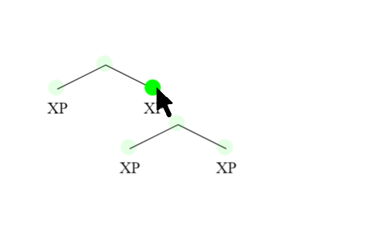Of course, branching can be done upwards as well. By clicking on the top edge of our root branch, we create a left-branching node on top of it :
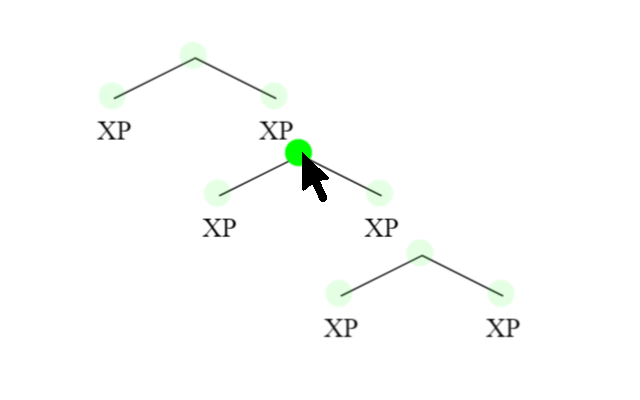In order to branch upwards towards the right, we simply click while holding down the Shift key :
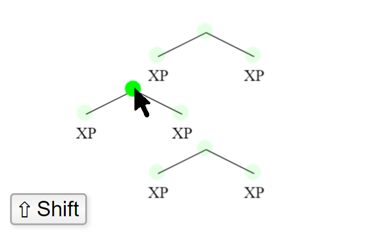When adding multiple branches to a tree, TreeBuilder tries to space them out appropriately. If the default placement is incorrect or not optimal, we have full liberty to adjust the tree to our needs.
The bottom edges of a branch can be dragged to reposition that particular 'arm' (and its subtree if present) :
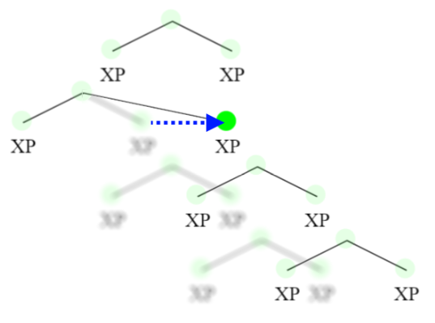 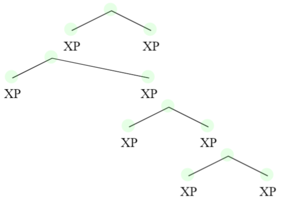The top edge of a branch can be dragged to adjust its position relative to its parent-branch :
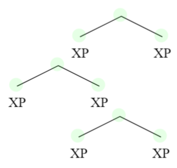 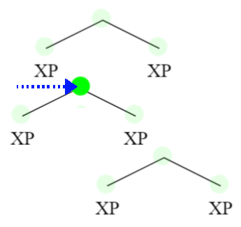The button panel allows us to create branches with one/three arms too :
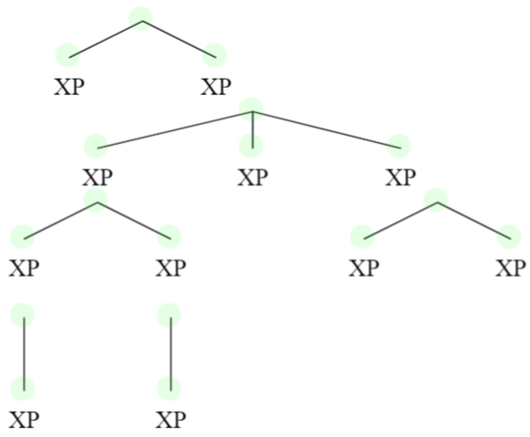Connecting features of your syntax tree with arrows is a 3-step process :
Arrows have a minimum size, but can be expanded away from the tree as much as needed. To do so, we drag the blue circle in the corner of the arrow :
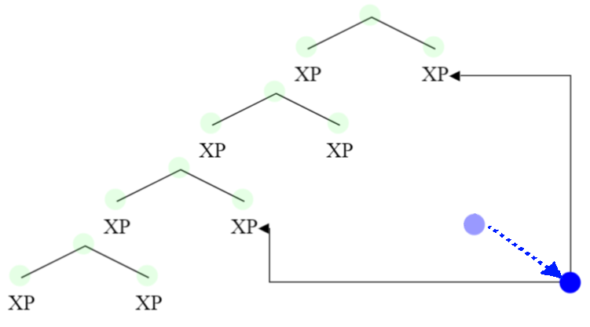We can re-attach the start/end of an arrow to a different text box by dragging the arrow-tip to another purple indicator :
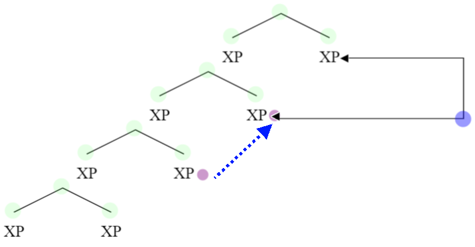TreeBuilder allows us to export a tree in two ways :
Exporting as a JSON file allows us to reload into the canvas a tree that we previously worked on. The .SVG image exports can be easily added to a Word document, by simply dragging the .SVG file into it.
Upon clicking on a text box, we enter text editing mode. Most standard text-editing features work in text boxes too (such as Ctrl+A to select whole text, TripleClick to select current line, etc..).
The color menu surrounding the text box works based on text selection. If there is no active text selection, the whole text box will be colored. If there is a selection, only the selection will be colored :
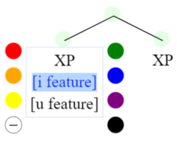 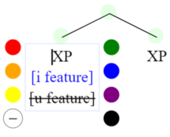The bottom-left button of the color menu is used to strikeThrough text. StrikeThrough works on a per-line basis.
Triangles can be added to a text box to symbolize an abstracted subtree. To do so, we right-click on the text box and select 'Toggle △' from the menu. Since a triangle stands for a subtree, it can only be added to a text box without a branch below it :
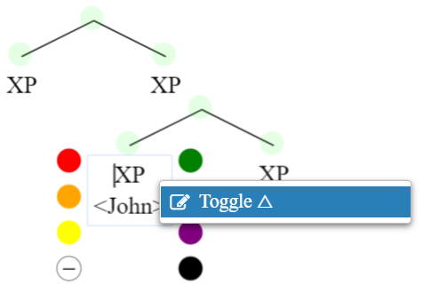 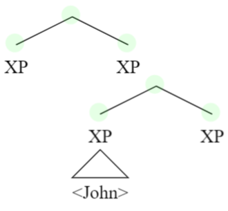If the text box has multiple lines, the triangle will be placed below the first line of text. A triangle can be removed by selecting 'Toggle △' again from the right-click menu.
Right-clicking on a tree branch pops up a drop-down menu. With this menu we can add a new branch in the middle of an existing structure, without having to re-build it from scratch :
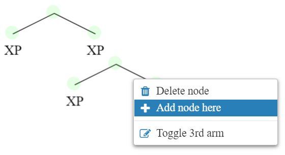 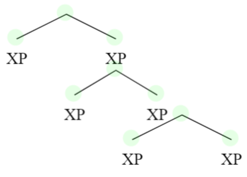This menu can also be used to change a binary branch into a ternary one (and vice-versa), and to delete a branch in the middle of a structure. For the moment, branch deletion only works for branches that have one child-branch or less.
We can vertically navigate the canvas by scrolling up/down, and horizontally navigate by scrolling while holding the Shift key.
We can also reposition the canvas by simply clicking on an empty part of it and dragging the cursor.